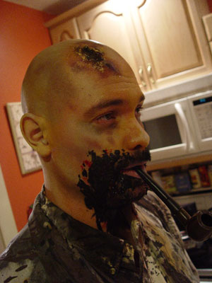
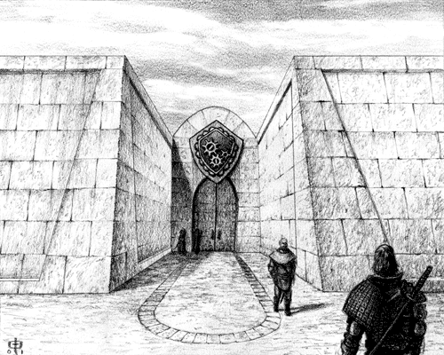

Jester-Knight
Literature
Film
Music
Visual Art
Tributes
Submissions
Links
Contact
Chuck Regan


Biography
Chuck Regan is an illustrator, graphics and web designer, writer, and animator. You can see examples at www.maelstromgrafx.com
Click below for Chuck's work
Little Agony: Chapter 6 (.pdf) NEW!!
LITTLE AGONY is the fictional name of a small mining town on Mars. The story was inspired by the author's love of Spaghetti Westerns, the TV show Firefly, the works of Robert Heinlein and William Gibson, and the tales of war by Ernest Hemingway. This is CD Regan's first attempt at writing a novel.
In this exerpt, the main character, Jon Tarnett, is on his way back to Mars. He had been incarcerated in a penal colony on Ganymede for seven years after fighting on the losing side of the Mars war for independence. In this chapter, Jon is a passenger on an old luxury ship called the Pharos, which is a leftover from a more prosperous era. Jon interacts with some of the other passengers for the first time and gets a taste of how things have changed during his stay on Ganymede.
Jester's Bliss, Pt. 1 (.pdf)
Jester's Bliss, Pt. 2 (.pdf)